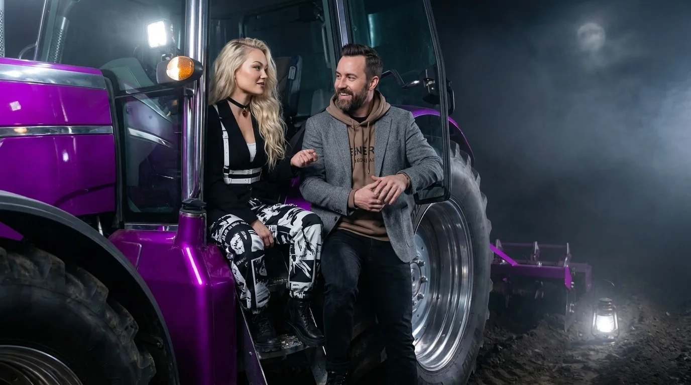
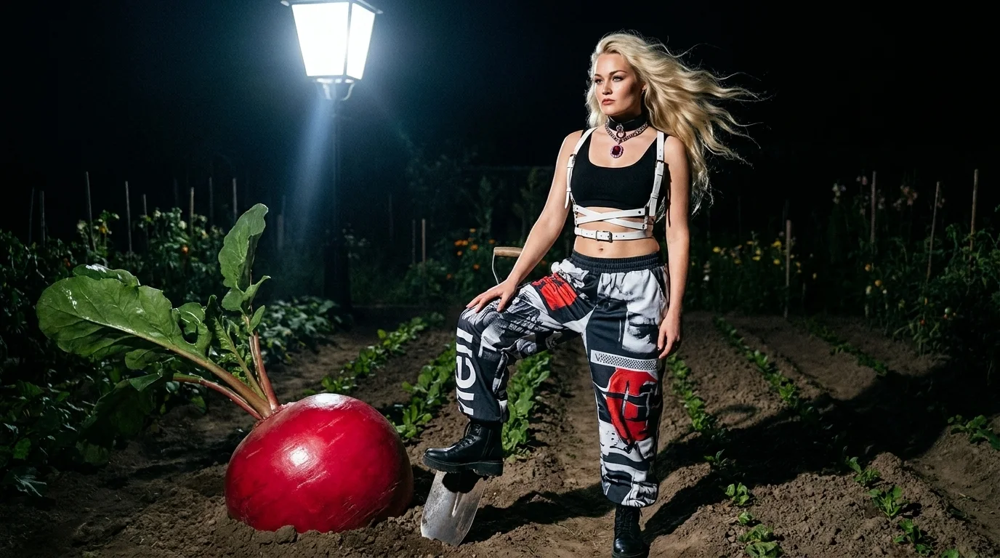
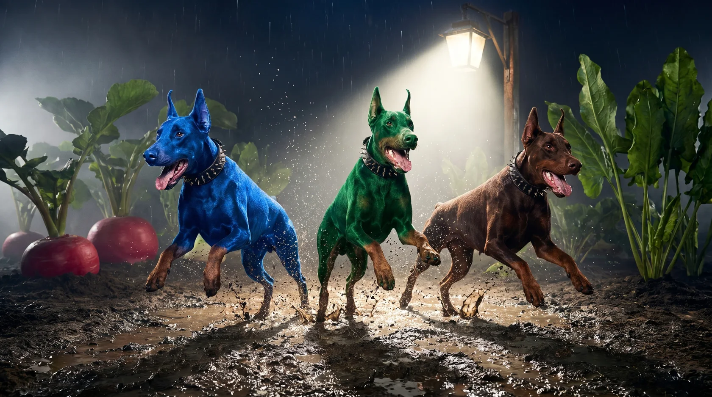
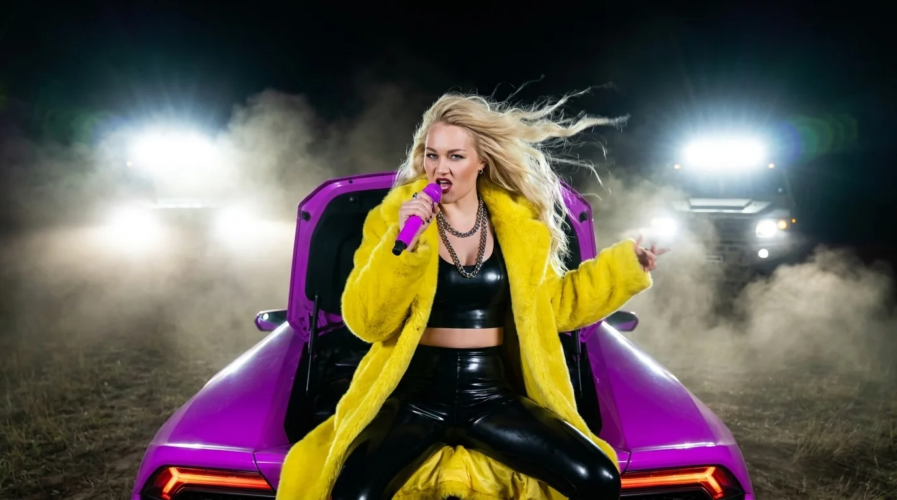

02 / НІЧНА РОЗМОВА ТРИВАЄ
ФіолетовийТрактор
Туман, поле та одне питання, яке не дає Ро́ману спокою.
ЗМІНИЛАСЯ ЛОКАЦІЯ. НЕ ПИТАННЯ.
Нічна розмоваз Вітою триває.
На даху було затісно для цього питання. Тепер — поле, фіолетовий трактор і туман, який знає більше, ніж розповідає.
01 / ВІТА × РО́МАН
Без сценарію. З непередбачуваною географією.
Хто ж усе-такивипустив собак?
Відповідь губиться між сміхом, нічними кадрами й відкритою фірткою. Розмова продовжується — просто тепер поруч трактор.
02 / ТУТ ЩОСЬ ПІШЛО НЕ ТАК
Це мій город.Це мій хаос.
Редиска на місці. Лопата теж. І лише фіртка поводиться підозріло.


Натисни. Ро́ман теж хоче знати.
03 / ЛІРИЧНИЙ ВІДСТУП
Дайтелопату.
«Я хотіла щавель. Я хотіла салат. А отримала цей перець маскарад».ВІТА / рядки з пісні
04 / САУНДТРЕК НІЧНОГО ГОРОДУ
Хто ВипустивСобак?
Якщо розгадка й існує, вона десь між «Woof-woof» і «Baila baila фіртку».
Не вдалося завантажити трек. Спробуй ще раз.
Рядки з пісні
Редиска на грядці І ще трошки салату Скоро щавель почне розквітати Я думала поприбирати Якось цей внутрішній хаос здолати Але щось пішло не так Хто хто Хто хто випустив собак
Фіртка відкрита Хаос на городі Я в тренді я в бренді Але в незгоді Собаки серіали собаки кіно Вони столочили моє полотно Я хотіла щавель Я хотіла салат А отримала цей перець маскарад

05 / ВІДЕОФРАГМЕНТ · НЕЗАБАРОМ
Туман приховуєпродовження.
Ніч має що показати.
06 / КАДРИ, ЯКІ ЗАЛИШИЛИСЯ